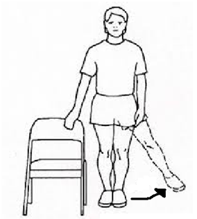

Abduction
Position
Stand next to a table or something else that can support.
Indication
Tilt the operated leg to the side (abduction) and try to not make any rotation! The toes should point forward and the knee should be stretched. Only do this exercise with the operated leg.
- When the person stands straight, this must be indicated as 0º and the degrees when the leg lifts sideways must be calculated.
- This exercise improves mobility and strength of lifting the leg sideways of the operated leg. This is of importance for while walking.
